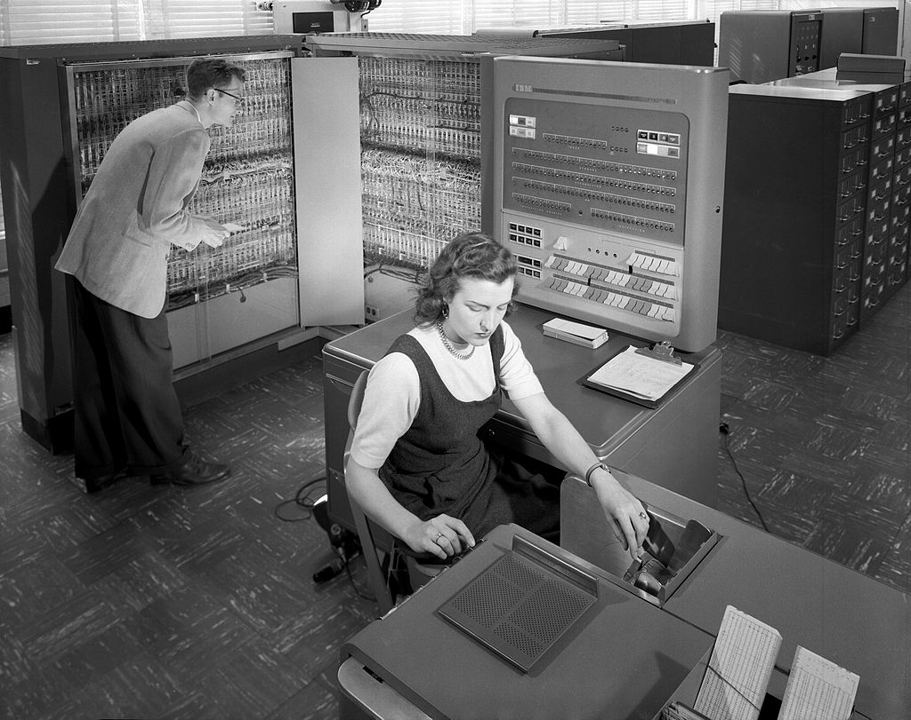

-Programming has come a long way since its inception in the 19th century, with new technologies and innovations driving its evolution. In this blog, we explore the history of programming, the types of programming languages, the future of programming, the role of AI in programming, and the role of popular IDEs in modern programming.
Programming is important because it enables us to create software, websites, mobile apps, games, and many other digital products that we use in our daily lives. It allows us to automate tasks, solve complex problems, and create innovative solutions that improve our lives and businesses. In today's digital age, programming skills are in high demand and are essential for success in many industries, from tech to finance to healthcare.By learning to code, we can open up a world of opportunities and take advantage of the many benefits that technology has to offer.
Initially, programming was done using punch cards and it was a tedious and time-consuming task. But with the invention of computers, programming became more accessible and efficient. In this blog, we will take a closer look at the evolution of programming languages, the history of programming, types of programming languages, the future of programming, the role of AI in programming, and the role of IDEs popular for programming.

The history of programming dates back to the early 19th century when mathematician Ada Lovelace created an algorithm for Charles Babbage's Analytical Engine, which is considered the first computer. However, the first actual programming language was developed in the 1950s, called FORTRAN (Formula Translation). This language was used for scientific and engineering calculations.
In the 1960s, programming languages such as COBOL (Common Business-Oriented Language), BASIC (Beginners All-Purpose Symbolic Instruction Code), and ALGOL (Algorithmic Language) were developed. These languages were used to write applications for business and research.